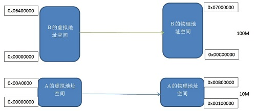
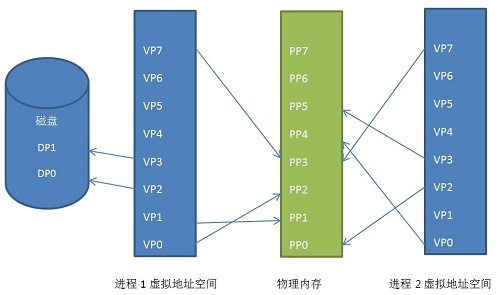
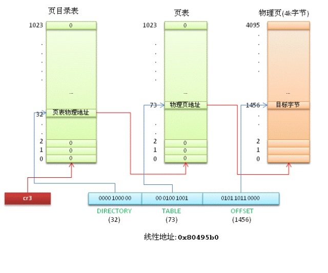

对于这两个概念，让我们来回顾一下历史。
在早期的计算机中，程序是直接运行在物理内存上的。换句话说，就是程序在运行的过程中访问的都是物理地址。如果这个系统只运行一个程序，那么只要这个程序所需的内存不要超过该机器的物理内存就不会出现问题，我们也就不需要考虑内存管理这个麻烦事了，反正就你一个程序，就这么点内存，吃不吃得饱那是你的事情了。然而现在的系统都是支持多任务，多进程的，这样CPU以及其他硬件的利用率会更高，这个时候我们就要考虑到将系统内有限的物理内存如何及时有效的分配给多个程序了，这个事情本身我们就称之为内存管理。
下面举一个早期的计算机系统中，内存分配管理的例子，以便于大家理解。
假如我们有三个程序，程序A，B，C。程序A运行的过程中需要10M内存，程序B运行的过程中需要100M内存，而程序C运行的过程中需要20M内存。如果系统同时需要运行程序A和B，那么早期的内存管理过程大概是这样的，将物理内存的前10M分配给A, 接下来的10M-110M分配给B。这种内存管理的方法比较直接。此时，假设我们这个时候想让程序C也运行，同时假设我们系统的内存只有128M，显然按照这种方法程序C由于内存不够是不能够运行的。大家知道可以使用虚拟内存的技术，内存空间不够的时候可以将程序不需要用到的数据交换到磁盘空间上去，已达到扩展内存空间的目的，但这种内存管理方式存在的几个比较明显的问题。
进程地址空间不能隔离
由于程序直接访问的是物理内存，这个时候程序所使用的内存空间不是隔离的。举个例子，就像上面说的A的地址空间是0-10M这个范围内，但是如果A中有一段代码是操作10M-128M这段地址空间内的数据，那么程序B和程序C就很可能会崩溃（每个程序都可以系统的整个地址空间）。这样很多恶意程序或者是木马程序可以轻而易举的破快其他的程序，系统的安全性也就得不到保障了，这对用户来说也是不能容忍的。
内存使用的效率低
如上面提到的，如果我们要像让程序A、B、C同时运行，那么唯一的方法就是使用虚拟内存技术将一些程序暂时不用的数据写到磁盘上，在需要的时候再从磁盘读回内存。这里程序C要运行，将A交换到磁盘上去显然是不行的，因为程序是需要连续的地址空间的，程序C需要20M的内存，而A只有10M的空间，所以需要将程序B交换到磁盘上去，而B足足有100M，可以看到为了运行程序C我们需要将100M的数据从内存写到磁盘，然后在程序B需要运行的时候再从磁盘读到内存，我们知道IO操作比较耗时，所以这个过程效率将会十分低下。
程序运行的地址不能确定
程序每次需要运行时，都需要在内存中非配一块足够大的空闲区域，而问题是这个空闲的位置是不能确定的，这会带来一些重定位的问题，重定位的问题确定就是程序中引用的变量和函数的地址，由于涉及到编译原理的内容，我们在这里不作过多解释，读者请自行查阅资料。
内存管理无非就是想办法解决上面三个问题，如何使进程的地址空间隔离，如何提高内存的使用效率，如何解决程序运行时的重定位问题？
这里引用计算机界一句无从考证的名言：“计算机系统里的任何问题都可以靠引入一个中间层来解决”。现在的内存管理方法就是在程序和物理内存之间引入了虚拟内存这个概念。虚拟内存位于程序和物理内存之间，程序只能看见虚拟内存，再也不能直接访问物理内存。每个程序都有自己独立的进程地址空间，这样就做到了进程隔离。这里的进程地址空间是指虚拟地址。顾名思义既然是虚拟地址，也就是虚的，不是现实存在的地址空间。
既然我们在程序和物理地址空间之间增加了虚拟地址，那么就要解决怎么从虚拟地址映射到物理地址，因为程序最终肯定是运行在物理内存中的。主要有分段和分页两种技术。
分段(Segmentation)机制
这种方法是人们最开始使用的一种方法，基本思路是将程序所需要的内存地址空间大小的虚拟空间映射到某个物理地址空间。
每个程序都有其独立的虚拟的独立的进程地址空间，可以看到程序A和B的虚拟地址空间都是从 0x00000000 开始的。我们将两块大小相同的虚拟地址空间和实际物理地址空间一映射，即虚拟地址空间中的每个字节对应于实际地址空间中的每个字节，这个映射过程由软件来设置映射的机制，实际的转换由硬件来完成。
这种分段的机制解决了文章一开始提到的3个问题中的进程地址空间隔离和程序地址重定位的问题。程序A和程序B有自己独立的虚拟地址空间，而且该虚拟地址空间被映射到了互相不重叠的物理地址空间。如果程序A访问虚拟地址空间的地址不在 0x00000000-0x00A00000 这个范围内，那么内核就会拒绝这个请求，所以它解决了隔离地址空间的问题。我们应用程序A只需要关心其虚拟地址空间 0x00000000-0x00A00000，而其被映射到哪个物理地址我们无需关心，所以程序永远按照这个虚拟地址空间来放置变量，代码，不需要重新定位。
无论如何分段机制解决了上面两个问题，是一个很大的进步，但是对于内存效率问题仍然无能为力。因为这种内存映射机制仍然是以程序为单位，当内存不足时仍然需要将整个程序交换到磁盘，这样内存使用的效率仍然很低。那么，怎么才算高效率的内存使用呢。事实上，根据程序的局部性运行原理，一个程序在运行的过程当中，在某个时间段内，只有一小部分数据会被经常用到。所以我们需要更加小粒度的内存分割和映射方法。于是，另一种将虚拟地址转换为物理地址的方法——分页机制应运而生了。
分页机制
分页机制就是把内存地址空间分为若干个很小的固定大小的页，每一页的大小由内存决定，就像Linux中Ext文件系统将磁盘分成若干个Block一样，这样做是分别是为了提高内存和磁盘的利用率。试想以下，如果将磁盘空间分成N等份，每一份的大小(一个Block)是1M，如果我想存储在磁盘上的文件是1K字节，那么其余的999K字节是不是浪费了。所以需要更加细粒度的磁盘分割方式，我们可以将Block设置得小一点，这当然是根据所存放文件的大小来综合考虑的。
内存中的分页机制跟Ext文件系统中的磁盘分割机制非常相似。Linux中一般页的大小是4KB，我们把进程的地址空间按页分割，把常用的数据和代码页装载到内存中，不常用的代码和数据保存在磁盘中。我们还是以一个例子来说明，如下图：
我们可以看到进程1和进程2的虚拟地址空间都被映射到了不连续的物理地址空间内。这个意义很大，如果有一天我们的连续物理地址空间不够，但是不连续的地址空间很多，如果没有这种技术，我们的程序就没有办法运行。甚至两个进程共用了一部分物理地址空间，这就是共享内存。
进程1的虚拟页VP2和VP3被交换到了磁盘中，在程序需要这两页的时候，Linux内核会产生一个缺页异常，然后异常管理程序会将其读到内存中。
这就是分页机制的原理，当然Linux中的分页机制的实现还是比较复杂的，通过了也全局目录，页上级目录，页中级目录，页表等几级的分页机制来实现的，但是基本的工作原理是不会变的。
分页机制的实现需要硬件的实现，这个硬件名字叫做MMU内存管理单元(Memory Management Unit)——专门负责从虚拟地址到物理地址转换，也就是从虚拟页找到物理页。
在具体讨论“Linux的内存分页管理”前，我们先了解一下三个地址：虚拟地址、线性地址、物理地址。
这里说了Linux中逻辑地址等于线性地址，那么线性地址怎么对应到物理地址呢？经过上一节的讨论，这个转换就是通过Linux分页机制。具体的说，就是通过页表查找来对应物理地址。
注解
分页是CPU提供的一种机制，Linux只是根据这种机制的规则，利用它实现了内存管理。
分页的基本原理是把内存划分成大小固定的若干单元，每个单元称为一页（page），每页包含4k字节的地址空间（为简化分析，我们不考虑扩展分页的情况）。这样每一页的起始地址都是4k字节对齐的。为了能转换成物理地址，我们需要给CPU提供当前任务的线性地址转物理地址的查找表，即页表(page table)。这里要注意，为了实现每个任务的平坦的虚拟内存，每个任务都会有自己的页目录表和页表。
为了节约页表占用的内存空间，x86将线性地址通过页目录表和页表两级查找转换成物理地址。
32位的线性地址被分成3个部分：
最高10位 Directory 页目录表偏移量，中间10位 Table是页表偏移量，最低12位Offset是物理页内的字节偏移量。
页目录表的大小为4k（刚好是一个页的大小），包含1024项，每个项4字节（32位），项目里存储的内容就是页表的物理地址。如果页目录表中的页表尚未分配，则物理地址填0。
页表的大小也是4k，同样包含1024项，每个项4字节，内容为最终物理页的物理内存起始地址。
每个活动的任务，必须要先分配给它一个页目录表，并把页目录表的物理地址存入 cr3 寄存器。页表可以提前分配好，也可以在用到的时候再分配。
还是以 mov 0x80495b0, %eax 中的地址为例分析一下线性地址转物理地址的过程。
前面说到Linux中逻辑地址等于线性地址，那么我们要转换的线性地址就是0x80495b0。转换的过程是由CPU自动完成的，Linux所要做的就是准备好转换所需的页目录表和页表（假设已经准备好，给页目录表和页表分配物理内存的过程很复杂，后面再分析）。
内核先将当前任务的页目录表的物理地址填入 cr3 寄存器。
线性地址 0x80495b0 转换成二进制后是 0000 1000 0000 0100 1001 0101 1011 0000，最高10位 0000 1000 00 的十进制是32，CPU查看页目录表第32项，里面存放的是页表的物理地址。线性地址中间10位 00 0100 1001 的十进制是73，页表的第73项存储的是最终物理页的物理起始地址。物理页基地址加上线性地址中最低12位的偏移量，CPU就找到了线性地址最终对应的物理内存单元。
我们知道Linux中用户进程线性地址能寻址的范围是0 － 3G，那么是不是需要提前先把这3G虚拟内存的页表都建立好呢？一般情况下，物理内存是远远小于3G的，加上同时有很多进程都在运行，根本无法给每个进程提前建立3G的线性地址页表。Linux利用CPU的一个机制解决了这个问题。进程创建后我们可以给页目录表的表项值都填0，CPU在查找页表时，如果表项的内容为0,则会引发一个缺页异常，进程暂停执行，Linux内核这时候可以通过一系列复杂的算法给分配一个物理页，并把物理页的地址填入表项中，进程再恢复执行。当然进程在这个过程中是被蒙蔽的，它自己的感觉还是正常访问到了物理内存。
